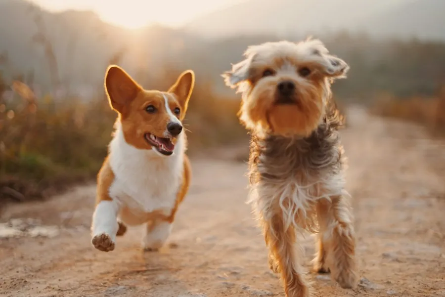
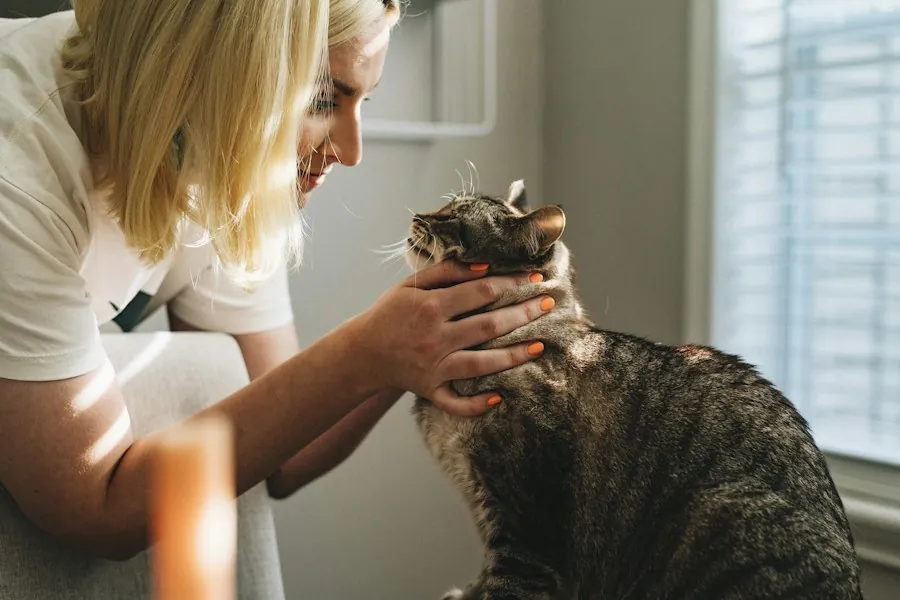
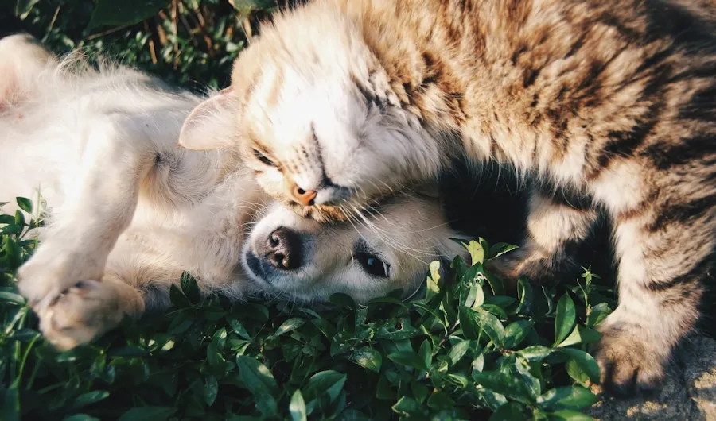

🚑
Resgate e acolhimento
Atuamos em situações de abandono e vulnerabilidade, garantindo segurança e primeiros cuidados.
Resgatamos, cuidamos e conectamos animais a novas famílias. Cada doação, consulta, lar temporário e adoção ajuda a escrever um novo começo.
Nosso trabalho conecta resgate, atendimento veterinário, prevenção, lares temporários e adoção responsável para que cada animal tenha a chance de viver bem.
Atuamos em situações de abandono e vulnerabilidade, garantindo segurança e primeiros cuidados.
Consultas, vacinas, exames e tratamentos fazem parte da jornada para recuperar qualidade de vida.
Buscamos famílias preparadas para oferecer vínculo, segurança e cuidado por toda a vida.
Informação também salva vidas. Promovemos consciência sobre guarda responsável e bem-estar animal.
Cada frente atua em uma etapa diferente da jornada de cuidado: resgatar, tratar, recuperar e encontrar uma nova família.

Resgate & cuidadoResgate, alimentação, acolhimento e cuidados iniciais para pets retirados de situações de abandono.

Saúde petAtendimento veterinário, vacinação, exames e suporte para animais que precisam recuperar a saúde.

AdoçãoAproximamos pets recuperados de famílias que entendem que adoção é compromisso, vínculo e cuidado contínuo.
Cuidados veterinários e acompanhamento até a alta.
Pessoas acolhendo animais durante o período de recuperação.
Famílias conectadas a pets prontos para um novo começo.
Visual conceitual para representar parceiros, clínicas, lares temporários e pontos de arrecadação.
Conheça os pets disponíveis, veja informações de saúde e temperamento e favorite aqueles com quem você sentiu uma conexão. Quando quiser avançar, fale diretamente com a equipe sobre o pet escolhido.
Dica: você também pode usar ← para passar e → para favoritar.
Você ainda não favoritou nenhum pet. Use o coração no Pet Match para montar sua seleção.
Recebemos casos, avaliamos a situação e organizamos o resgate.
O pet recebe avaliação, tratamento, vacinação e acompanhamento.
Lares temporários ajudam o animal a se recuperar com tranquilidade.
Adoção responsável fecha o ciclo e abre uma nova história.
Indicadores, projetos, campanhas e formas de contribuição precisam estar claros. Confiança também faz parte do cuidado.
A experiência do site foi pensada para destacar projetos, resultados e formas de participação sem esconder as informações que importam.
Escolha um valor, defina se a contribuição será única ou mensal e selecione a forma de pagamento. Para quem prefere rapidez, o PIX continua disponível.
O site final deverá usar tokenização por um gateway de pagamento. A ONG não deve armazenar número completo do cartão nem CVV.
Na versão publicada, os dados do cartão devem ser enviados diretamente para o gateway de pagamento e convertidos em um token seguro.
Após copiar a chave, faça a transferência pelo aplicativo do seu banco.
Protótipo front-end: nenhuma cobrança real é realizada nesta versão. Para produção, conecte o formulário a um provedor de pagamentos compatível com cobranças únicas e recorrentes.
Ajude em eventos, resgates, transporte, feiras de adoção, divulgação ou suporte aos pets acolhidos.
Quero ser voluntário →Um lar temporário dá segurança para o pet se recuperar enquanto buscamos a família definitiva.
Quero acolher um pet ♡